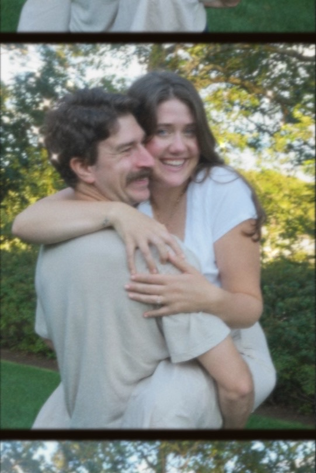

about me
I am a backend developer based in Montana! I live with my fiance Coco and our dog Buckaroo. I love to build things, read, and workout. I currently work for Brightvine, a company that is building auditing software for financial securities using blockchain and AI technologies.
My stack is currently golang, SQL - postgres, and typescript. I work on buildng backend-apis using GraphQL and RESTful endpoints. In 2024 I implemented a resource sharing system, migrated our blockchain wrapper from nodejs to golang, integrated a third party pricing service, and created a docker container for live debugging of our local application.
In 2022 I architected the companies smart contracts in solidiity, built the nodejs wrapper for the blockchain that used event based communication (GCP pub/sub), worked on our local wallet solution that allowed our users to interact with the blockchain without ever having to register or deal with a crypto wallet. I also helped maintain our hyperledger besu (blockchain) implementation deployed on Azure.
Before Brightvine I recieved my Masters Degree in Computer Science from Montana State University. I did research using an Integer Linear Program to find the optimal credit and tax incentives for carbon capture and storage pipelines in California and Kansas. You can read my thesis here. I worked under Sean Yaw. Besides my thesis I worked as a tutor for Data Structures and Alorithms as well as a teaching assistant for Computer Systems.
In even older news I graduated from Coding Dojo in 2019. Worked as a Data Entry Specialist and then as a Data Analyst for United Road Services. Recieved my undergraduate Degree in Economics at Purdue University. Growing up I played competivie ice hockey in Austin and Dallas Texas as well as in Los Angeles, CA. I love to read books and I can still solve a rubix cube.